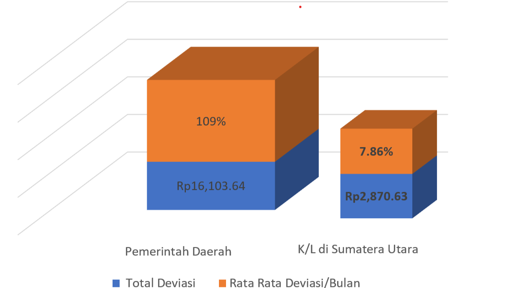
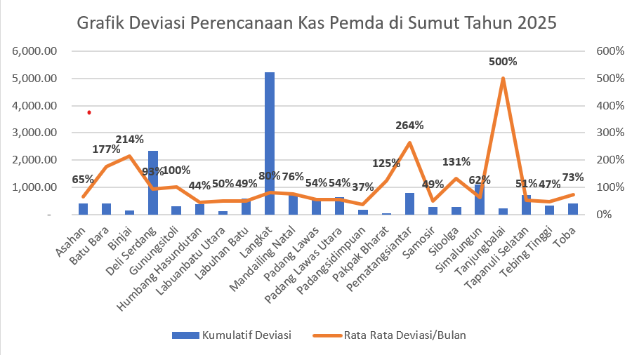

Konteks Strategis
Pengelolaan kas daerah berpengaruh langsung terhadap efektivitas layanan publik, stabilitas fiskal, dan pelaksanaan APBD. Masih terdapat kendala seperti proyeksi kas yang belum akurat, koordinasi belum optimal, monitoring belum real-time, mismatch arus kas, dan idle cash pada RKUD.
Diperlukan penguatan tata kelola kas yang lebih terencana, terintegrasi, dan berbasis data. DJPb berperan strategis sebagai Regional Chief Economist dalam mendorong pengelolaan kas negara yang modern dan akuntabel.
Urgensi Peran Kanwil DJPb
Kemampuan pembinaan DJPb terhadap pengelolaan kas sudah teruji pada edukasi/pembinaan pengelolaan keuangan satuan kerja (Satker) Kementerian/Lembaga (K/L) melalui Monitoring dan Evaluasi Pelaksanaan Anggaran Belanja K/L (Monev PA) dengan memberikan penilaian Indikator Pelaksanaan Anggaran (IKPA) Satker dan K/L.
Lebih lanjut dibutuhkan peran Kanwil DJPb dalam peningkatan pengelolaan keuangan daerah sebagai bagian dari Keuangan Negara.
“Kita harus memaknai frasa ‘Keuangan Negara’ di Forum Komunikasi Pengelola Keuangan Negara sebagai dana yang berasal dari APBN dan APBD”
— Suhaisil Nazara, Wamenkeu (MTI Vol.3/2021)
Deviasi Perencanaan Kas
Deviasi antara rencana dan realisasi kas daerah masih relatif tinggi, sehingga diperlukan penguatan pembinaan dan pendampingan Kanwil DJPb dalam fungsi TREFA.
Data Belum Real-Time
Integrasi data kas antara Pemda, KPPN, dan Kanwil DJPb belum real-time sehingga monitoring kas dan proyeksi regional belum optimal.
Penguatan Peran Pembinaan
Pembinaan telah berjalan, namun perlu penguatan pada integrasi data, pendampingan cash forecasting, dan pembinaan proaktif berbasis digital.
Dasar Hukum
- PP 39/2007 Penyusunan Renkas Pemda
- PMK 262/2016 Asistensi & Advisory DJPb
- KEP-2/PB/2023 Partnership & Data Analytics
- PER-1/PB/2023 Pembinaan & Supervisi KPPN
- Permendagri 77/2020 Kebijakan Kas Daerah
Perbandingan RPD Pemda dan K/L APBN TA 2025
Perbandingan realisasi menunjukkan pengelolaan kas daerah belum optimal, ditandai dengan perencanaan tidak periodik dan belum didukung regulasi teknis.

Gambaran Deviasi Kas Pemda Sumatera Utara
Deviasi antara rencana dan realisasi kas masih tinggi, menunjukkan perlunya pembinaan berbasis data oleh Kanwil DJPb.
